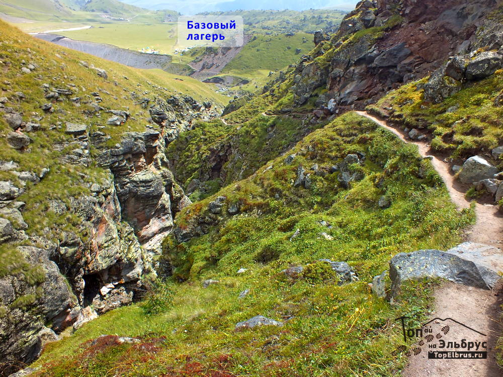

Маршрут восхождения на Эльбрус с севера
Подробное описание маршрута восхождения на Эльбрус по северному склону. Рассмотрим участки пути, которые вы будете последовательно проходить при движении вверх по тропе от базового лагеря
к штурмовой базе Лакколит на высоте 3800 м
и далее по маршруту восхождения от базы 3800 м до Восточной вершины Эльбруса 5621 м.
- Варианты путей на тех участках, где тропа разветвляется
- Рекомендации по выбору более безопасных вариантов тропы, а также лёгких по затратам сил и экономных по времени
- Не рассматриваются аспекты акклиматизации и варианты программы восхождения на Эльбрус
Маршрут условно можно разделить на две части.
Нижняя часть тропы от высоты 2560 до 3800 м проходит по склонам и осыпям. Летом снега на ней нет, и можно пройти снизу доверху в треккинговых кроссовках или ботинках. Ранней весной и поздней осенью тропа заснежена и приходится идти в альпинистских ботинках.
Верхний участок от 3800 м до вершины 5621 м, по которому и происходит восхождение, представляет собой снежно-ледовый склон. По нему передвигаться необходимо уже с кошками на ботинках.
В нижней части тропа хорошо натоптана и промаркирована турами (пирамидками из небольших камней) и, местами, краской. Здесь редко возникают трудности с ориентированием.
В верхней части, на больших участках снежно-ледовые поля, трудно ориентироваться в условиях плохой видимости в плотном тумане, наползающих облаках, в тёмное время суток, при снегопаде. В таких условиях навигатор может давать неправильные показания, поэтому в дополнение к нему, для уверенного ориентирования, лучше иметь с собой и обычный магнитный компас.
Скачать описание маршрута подъёма на Эльбрус с севера .pdf, поделиться ...
#serebryniy

#bazovyj-lager-elbrus-sever
Маршрут восхождения на Эльбрус по северному склону начинается из урочища Сурх (суслик, с балкарского), которое часто ошибочно называют поляной Эммануэля. Поляна Эммануэля лишь часть урочища - почти идеально ровная поляна круглой формы, примыкающую к скале с надписью, сделанной 10 июля 1829 года, во время экспедиции под руководством генерала Эммануэля.
Тропа на Эльбрус начинается от базового лагеря Лакколит (2560 м) и идёт вдоль ручья, стекающего с ледника Уллу-кол.
Перед каньоном она разветвляется:
Одна тропа идет прямо по склону каньона, по левой по ходу стороне (желтый пунктир).
Другая поворачивает влево по ходу, поднимается на травяное плечо над каньоном и идёт по этому плечу.
Третий вариант тропы требует перейти ручей и двигаться по правой по ходу стороне каньона.

Перейти ручей утром, когда в нём низкий уровень воды, не трудно. Но в конце дня он превращается в бурную горную речку, переходить которую непросто и опасно.
#3in1 Все эти три варианта тропы сливаются воедино у небольшого родничка в начале балки, по которой тропа идёт дальше.
По первому варианту МЧС ходить не рекомендует из-за возможности обвала камней на тропу и вероятности падения в каньон, если споткнётесь. Глубина каньона доходит до 15 метров.
Самый безопасный вариант тропы проходит по скальному плечу (красный пунктир). Удобно ходить и по правому по ходу варианту (голубой пунктир), но только когда уровень воды в ручье небольшой и переход вброд по камням не вызывает трудностей. По времени все три варианта практически равноценны.
От базы Лакколит до родника переход занимает 15–20 минут.
От родника тропа поднимается по крутому взлёту с крупными камнями и поворачивает в балку.
По балке один вариант тропы идёт вдоль русла пересыхающего ручья, другой по склону чуть выше.
По какой тропинке идти дело вкуса..
В конце балки вы увидите вулканическую бомбу, своеобразный «снежок» из лавы и камней, почти правильной сферической формы.
А затем, над выходом тропы на «немецкий аэродром» - скульптуру из лавы, напоминающую врубелевского демона.
Переход по балке до «немецкого аэродрома» занимает 15–20 минут.
«Немецкий аэродром» представляет собой огромную плоскость из щебня, поросшую редкой травой и мхом.
Тропа по нему хорошо видна и выходит в конце «аэродрома» к крутому подъёму. У начала взлёта есть удобное место, где обычно останавливаются отдохнуть. Переход от базы «Лакколит» до конца «аэродрома» занимает примерно 1 час.
После отдыха лучше идти вверх по тропе, петляющей по склону, вдоль русла пересыхающего летом ручья.
Лучше выбирать самый пологий вариант. Он будет самым лёгким по нагрузке. Несмотря на то, что взлёт кажется длинным, подъём по нему занимает 20–25 минут.
В конце взлёта можно повернуть направо и продолжить подъём по начинающемуся гребню, а можно продолжить движение по тропе по балке и примерно через 10 мин выйти к месту, где тропа разветвляется на две.
Одна уходит влево и по верхнему цирку выведет вас к взлётам по осыпям приходящим на гребень с каменными «грибами». Другая тропа, которая самым коротким путём выведет вас к штурмовой базе «Лакколит», поднимается вправо по мелкой осыпи на «седой» гребень и идёт дальше по нему.
Тропа по гребню отмечена четырьмя туриками. В конце гребня тропа, в просвет в скальном поясе, выходит к подножью холма «пирамида» с отметкой 3495 м. Здесь также удобное место для очередного отдыха. Переход по гребню от развилки троп до «пирамиды» занимает 1–1,5 часа, а от базы «Лакколит» на поляне - около 3 часов.
Далее тропа обходит холм с левой по ходу стороны, и спускается на «лунную поляну» - обширное плато на высоте 3500 м.

Весной вы видите плоскость, усеянную кусками красно-коричневой и чёрной лавы, производящую впечатление совершенно безжизненной территории. Но с начала августа белые ромашки надолго покрывают «лунную поляну» белым ковром, постепенно исчезающим к сентябрю.
В начале «лунной поляны», примерно в 100 метрах от склона холма, тропа снова раздваивается.
Та, что идёт прямо на юг в сторону большой высокой морены на фоне неба, ведёт к базе МЧС и штурмовой базе Лакколит.
Другая часть тропы идёт направо, в сторону ледника Уллу-кол, на его боковую морену. По ней вы попадёте к базам на морене Олейникова.
Для выхода на базу МЧС и штурмовую базу Лакколит надо от развилки идти по тропе, пересекающей «лунную поляну» поперёк в направлении на юг и идущей практически параллельно леднику.
Тропа промаркирована туриками и упирается в склон морены, по которому дальше поднимается по средней и мелкой осыпи.
В конце плато, под мореной удобное место для отдыха перед подъёмом к базам.
До баз остаётся примерно 1–1,5 часа пути. Здесь нужно хорошо отдохнуть, минут 15–20, дальше тропа идёт выше 3500 м и уже чувствуется ощутимая нехватка кислорода. Подъём по подвижной осыпи также даёт большую нагрузку на организм. Переход от «пирамиды» до места отдыха занимает 40-60 минут.
После отдыха поднимаемся на морену по тропе с мелким и средними подвижными камнями.
Подъём крутой, но достаточно короткий, 15–20 минут. От большой скалы наверху морены тропа поворачивает направо и идет по пологой осыпи от одного скального выступа к другому.
В конце пологого подъёма тропа сворачивает налево и по крупной осыпи приводит на морену почти исчезнувшего ледника Уллу-малиен-дерку. Поднимайтесь на морену и идите дальше по её гребню. Через минут 20 вы придете на штурмовую базу «Лакколит» 3800 м.
#severnyj-priyut-na-elbruse
Переход от нижней базы на поляне до верхней базы «Лакколит» занимает 4,5-6 часов и зависит от уровня вашей подготовки и степени акклиматизации. Тропа на этом участке подъёма на Эльбрус промаркирована туриками и летом хорошо видна, даже при выпадении незначительного количества снега.
База МЧС на высоте 3800 м расположена в ста метрах от штурмовой базы «Лакколит».
Около неё есть много расчищенных мест для палаток.
Здесь осыпные моренные отложения заканчиваются и выше начинается сплошной ледник, по которому надо двигаться в альпинистских ботинках и кошках. Летом он покрыт снегом, смёрзшимся и плотным утром, и раскисающим к середине дня. Мягкий снег, в который глубоко проваливаются ноги, затрудняет движение. Чем раньше вы поднимитесь на вершину, тем меньше потратите сил на спуске при ходьбе по раскисшему снегу.
Маршрут восхождения на Эльбрус от 3800 м
С высоты 3800 м начинается непосредственно маршрут восхождения на Эльбрус. Сначала нужно идти в направлении верхней морены 3900 м, в точку пересечения горизонтальной линии перегиба, идущей от верхней морены в сторону склона горы и линии склона горы, видной на фоне неба до выхода на перегиб склона.
По дороге надо обойти скальную гряду, вытаявшую из ледника за последние несколько лет. Когда вы выйдете на перегиб, вам откроется вид на ледяное озеро Дкаугенкёз и Главный Кавказский хребет. Здесь вы окажетесь на линии створа между мореной 3900 м и нижней скалой Ленца 4600 м. Это поворотная точка.

Здесь участники восхождения на Эльбрус с севера связываются верёвкой для дальнейшего движения по закрытому леднику.
Отсюда надо повернуть направо и продолжать подъём, вдоль условной линии соединяющей морену 3900 м и нижнюю скалу Ленца, придерживаясь правой стороны склона. На высоте чуть больше 4000 м вы подойдёте к «профессорской» трещине. Она иногда достигает большой ширины и представляет серьёзную опасность. В правой части она всегда сильно сужается и часто бывает перекрыта снежным мостом. Переходить её надо со страховкой именно здесь. Но иногда приходится всё равно навешивать перила.
Выше «профессорской» трещины других широких трещин пока не наблюдали, но для полной гарантии безопасности надо идти в связках минимум до нижней скалы Ленца 4600 м.
На высоте 4400 м вы выйдете на камни, где можно посидеть и отдохнуть. От них останется примерно 1 час ходьбы по относительно пологому склону до нижней скалы Ленца (4600 м).

Здесь в кармане под скалой можно отдохнуть и, если вы идёте на Восточную вершину, оставить верёвки.
Если вы идёте на Западную вершину Эльбруса, то верёвки надо брать с собой, потому что на подъёме с седловины на вершину и на спуске с неё может потребоваться организация страховки и перил для обеспечения безопасности.
После отдыха надо обойти скалу справа, подняться по короткому взлёту и идти по пологим снежным полям в направлении отдельно стоящих скал, обходя их и придерживаясь направления вдоль всего скального массива.
На высоте 4800 м скалы Ленца разделяются на две гряды, между которыми находится ровный снежный склон.
Здесь у начала снежного поля под небольшой скалой есть карман, относительно защищённый от ветра и удобный для остановки на отдых. По снежному полю удобно идти зигзагом. Приближаясь к его верхней части надо переходить на левую сторону под скалы, а потом, на перегибе, повернуть направо и выйти на пологие поля на высоте 5000 м.
По правой части склона, вдоль скальных выходов, вы подниметесь к верхней границе скал Ленца (5200 м). Отсюда начинается подъём по «куполу» Восточной вершины Эльбруса.
По «куполу» надо идти сначала в направлении на большой камень, видный чуть ниже края вершины.
От камня возможны два варианта выхода на вершину:
1. Обойдя камень слева и поднявшись по мелкой осыпи и короткому фирновому гребешку, вы поднимитесь на скалу на северном краю кратера Восточной вершины.
2. Повернув направо от камня, вы обойдёте скальные выходы по пологому склону и выйдите в понижение на краю кратера. Отсюда недалеко до пирамиды на южной стороне кратера. Также можно пройти к скале на северном крае.
С вершины Эльбруса в хорошую погоду вам откроется вид на весь Центральный Кавказ.
Далеко на юге иногда видна линия берега Чёрного моря. Ближе всего виден Донгуз–орун с ледником Семёрка и вершиной Накра-тау. Левее легко узнать двурогую вершину Ушбы. На силуэт Ушбы накладывается силуэт горы Шхельда. Левее Ушбы находится пик Щуровского, а между ним и Ушбой - Ушбинский ледопад. Восточнее виден массив Безенгийской стены. Если повезёт, то вдалеке на востоке можно увидеть Казбек.
Если вы идёте на Западную вершину Эльбруса, вам надо по «куполу» подняться до высоты седловины примерно 5300 м и косым траверсом вправо по ходу выйти на северный край седловины. Отсюда с набором высоты пересечь нижнюю часть склона Западной вершины, выйти на тропу, натоптанную со стороны южного склона, и по ней подняться на вершинное плато и далее на вершину горы.

Спуск с обеих вершин, как правило, происходит по пути подъёма, если не ставится цель сделать траверс горы, или Крест Эльбруса.
Восхождение на восточную вершину Эльбруса с севера занимает от 8 часов (очень быстро), до 9–10 часов в среднем.
Спуск с вершины от 3,5 (очень быстро) до 5 часов.
На вершину желательно подняться не позднее двух-трёх часов дня, чтобы на спуске не попасть в условия плохой видимости и не спускаться по темноте.